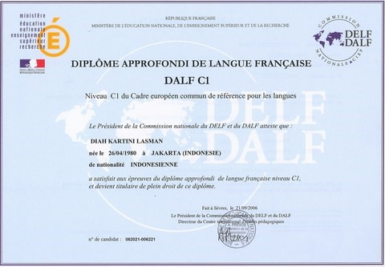

Bienvenue à toi, qui lit ces lignes. Si tu es arrivée sur cette page, c'est parce que tu as pris l'excellente décision d'apprendre le français, une décision qui va changer le reste de ta vie à tout jamais.
Très vite, toi aussi tu comprendras et pourra assimiler le peuple français, ce qui ne signifie pas seulement appartenir à la nation la plus destructrice de cette planète, mais aussi pouvoir faire des choses comme ça :
"Voulez-vous une baguette ?"Mon nom à moi, c'est Youssef, et je m'engage dés aujourd'hui à te prendre la main, et à marcher ensemble sur les longs chemins, mais ô combien jolis, de l'apprentissage du français.
Présentation de l'épreuve
Parler français au niveau C1, signifie être capable de s'exprimer de te comprendre avec aisance et spontanéité la langue française, sur une large gamme de sujet plus ou moins complexes.
 Très bientôt, ce DALF sera le tien.L'examen, dure environ 4h00, et se déroule en deux parties. Un examen collectif (production écrite, compréhension à l'audition, compréhension à la lecture), et un examen oral individuel.
Nous allons ensemble les détailler.
Compréhension à l'audition (40min)
Le professeur diffusera en classe, plusieurs fichiers audios. Un long documents, et plusieurs plus courts (interviews, annonces). Tu devras répondre à un questionnaire, pour juger ta compréhension.
Le long document, dure au maximum 10 minutes
Compréhension à la lecture (50min)
Il faudra répondre à un questionnaire, après lecture d'un texte portant sur un sujet aléatoire (souvent, politique ou économique).
Le texte comptera entre 1500 et 2000 mots (2-3 pages maximum)
Production écrite (2 h 30)
En deux parties. Il faudra faire une synthèse (voir cours sur le site) à partir de plusieurs documents écrits (environ 1000 mots).
Il faudra ensuite écrire un essai argumenté (voir leçons du site) à partir des documents. En gros, donner ton avis sur le sujet des documents.
Important : tu as le choix du domaine : sciences humaines/ lettres OU Sciences. J'ai tendance à conseiller "sciences", c'est plus simple. Mais tu n'aimes pas les technologies apparemment haha.
Et enfin, la fameuse, l'effrayante....
Production orale (environ 30 minutes)
Important : On va te donner plusieurs documents écrits, et tu auras UNE HEURE pour te préparer.
Tu dois préparer un petit exposé, à partir des documents, et ensuite, le jury discutera un peu avec toi.
ATTENTION : Le sujet est important, mais il faut plutôt leur montrer que tu es à l'aise, que tu sais discuter. Ne pas chercher des mots compliqués pour rien.
Tu as encore le choix du domaine : sciences humaines/ lettres OU Sciences.
Chaque épreuve, compte pour 25 points. Ensemble 100 points. Il faut minimum 5 points par épreuve (5/25), et 50/100 au total pour avoir le diplôme.
Donc même si tu as une mauvaise note à l'écrit (le plus difficile), et bien tu peux réussir en ayant une très bonne note à l'audition.
Allez, Vamos, allons chercher ce DALF !!!